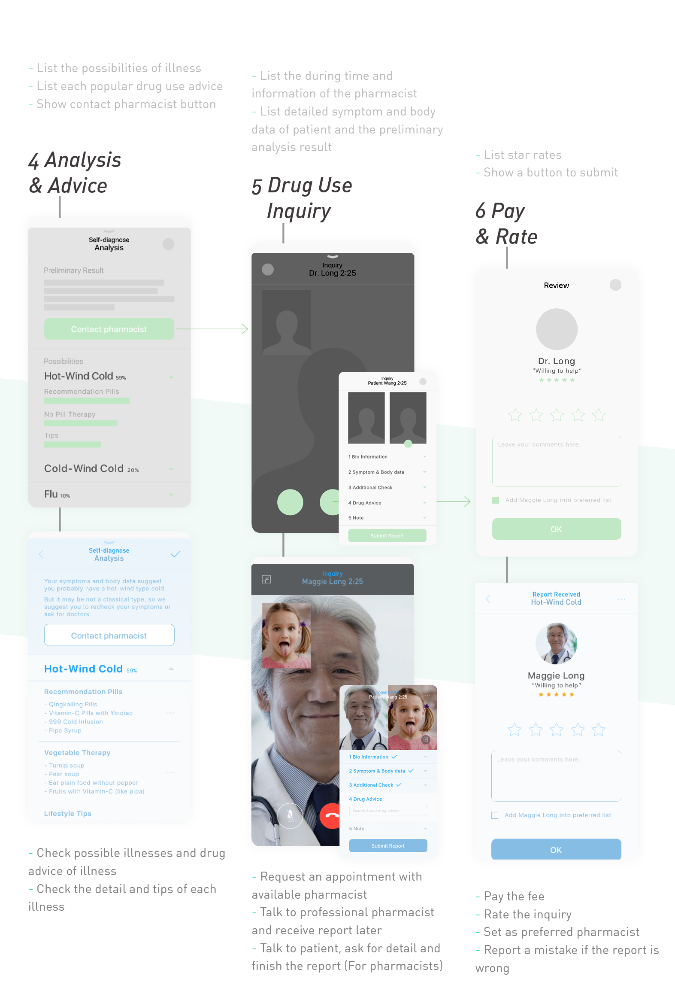
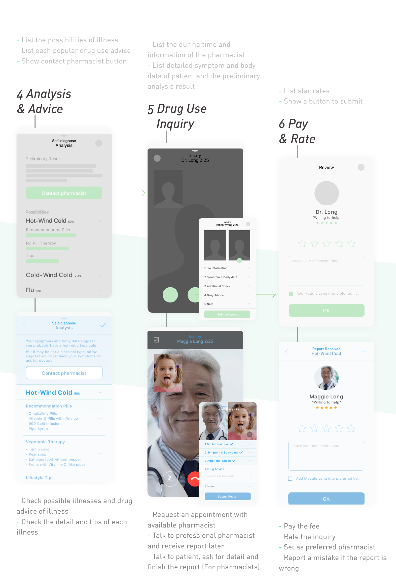

_role As the team leader, I conducted business research with my teammates together to come up with market positioning, business model innovation and marketing strategy. I was in charge of the project progress, information structure and presentation.
- _duration 3/ 2015 - 6/ 2015.
- _course Chinese Business Culture and Entrepreneurship, Zhejiang University
- _partners Maggie Long, Zheng Shen, Yan Li
- _scope Research, Business Process Design, Strategy, UI Design
_introducing
China's hospital medical resourse is scarce
and the young generation usually don't go to hospital,
that's why pharmacist became important
China's hospital medical resourse is scarce to afford billions people's daily health care. According to the research in 2014, the number of doctors per 10000 citizen was only 21 and the average waiting time in 3A hospital was half an hour. The bad condition brings patients miserable experience and risk to give wrong diagnose.
The youngs in China is becoming unwilling to go to hospital and wait in long queue if they feel not that bad. To deal with sight illness or their occupational disease, they buy themselves pills by parents' experience or searching on the Internet. But both way are not safe. Cold with similar symptom can be the wind-cold, wind-heat or rheumatism-cold type which mess people deeply. With increasing mobile medical market and new technology, there should be a better way to improve the experience and accuracy in self-diagnostics.
so we came up with the idea for patents
to create or get possible medical resourse
on their phone with Smartpill
_market analysis
before we started, we need to analysis
the pest + market resources to make sure
if there's a possible market


*1 There is no specific law in mobile medical care in China. I use standards by FDA in the U.S. to classify apps in China.
*2 With traditional Chinese diagnostics, patients are more focus on their symptom instead of body index data. But most patients are likely to use western medicine.
then we started to dig in
who can we serve and,
what can Smartpill do in capability

in a word,
SmartPill offers self-diagnostics
and drug use inquiry services
for the young and mid-aged patients
with slight or chronic disease
_business model innovation
we spent a semester on business analysis
to make a more complete model
with possible resources

as shown, we expand the partners to
medical companies and pharmacist union to
provide stable service and
collect more information in diagnostics database
_strategy
by market research and survey,
we designed a marketing strategy in 4P frame
to make sure our target users are accurate

_wireframe
to make it easy to understand,
we made a simple wireframe
 
